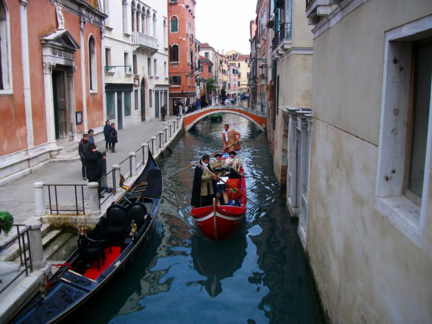
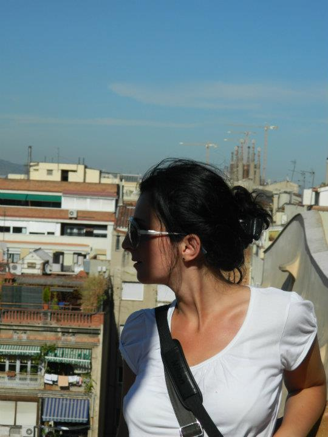
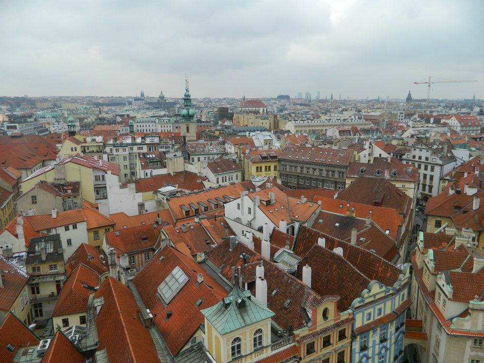

The outside world episode 1

Venice is one of the most
interesting and lovely places in the world. This sanctuary on a lagoon is virtually
the same as it was six hundred years ago, which adds to the fascinating character.
Venice has decayed since its heyday and is heavily touristed (there are 56000 residents
and 20 million tourists per year), but the romantic charm remains.
Venice was the first city outside Romania that I have visited. All in all, it was quite an experience. I still remember the mix of fear and happiness I felt going to the airport. Read more...
The Lady of the Rivers by Phillppa Gregory

The Lady of the Rivers is a 2011 historical novel
by Philippa Gregory, part of her series The Cousins' War. The story is narrated by Jacquetta of Luxembourg, mother
of Elizabeth Woodville, and covers the reign of the Lancastrian King Henry VI. The novel serves as a prequel
to Gregory's The White Queen (2009), the story of Elizabeth's reign as Queen of England.
Read more...
The outside world episode 2

I love the sea, and taking an early-morning jog along the Mediterranean
is my favourite way to start the day. I'm also a bit of a history nerd, and relish strolling the cobblestone lanes
of the Gothic quarter, thinking about the people in past centuries who walked these streets. Then there's the food
and drink – the first-rate tapas bars, the abundant and inexpensive wine, the superb and reasonably priced
multicourse lunches. Add Catalan creativity (Modernisme, Miró, Dalí), bohemian bars and stunning nearby getaways
and you have, quite simply, one of the world's most captivating cities..
Everybody wants to visit Barcelona. Barcelona is a city, very different from all the others European cities. Read more...
The outside world episode 3

How can you not love a city that has a pub with
vinyl cushions on the wall above the gents' urinal, so you can rest your head while you 'go'? Where you can order
a beer without speaking, simply by placing a beer mat on the table? And where that beer is probably the best in the
world? But it's not just exquisite ale and a wonderfully relaxed drinking culture that keep bringing me back to
Prague.
When we visited Prague, the weather was soooo cold, even though it was the end of March. Read more...
The White Queen by Phillppa Gregory

The White Queen is a 2009 historical novel by
Philippa Gregory, the first of her series The Cousins' War. It tells the story of Elizabeth Woodville, queen
consort of King Edward IV of England. The 2013 BBC One television series The White Queen is a 10-part
adaptation of Gregory's novels The White Queen, The Red Queen (2010) and The Kingmaker's Daughter (2012), and
features Rebecca Ferguson as Elizabeth Woodville. Gregory's 2011 novel The Lady of the Rivers is a prequel to The
White Queen, narrated by Elizabeth's mother Jacquetta of Luxembourg.
Read more...